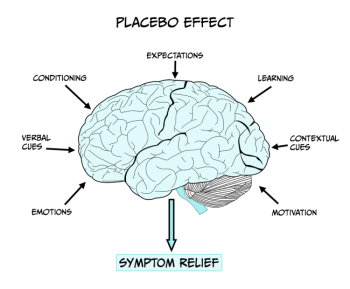
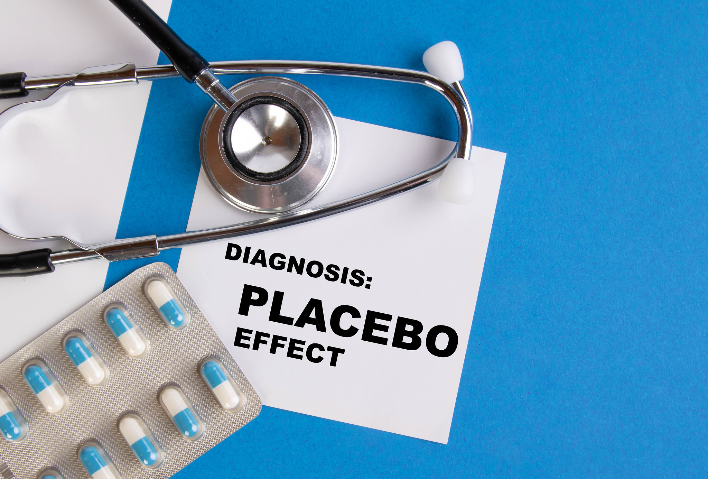
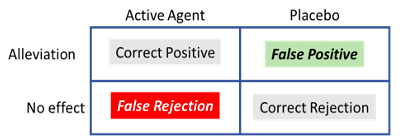

Placebos: a psychological and biological perspective
Learning Objectives
To gain an understanding of the following:
- The definition of a placebo effect
- The biological and psychological mechanisms of the placebo effect
- The importance of placebos in clinical trial design and their ethical considerations
- The contribution of placebos to our understanding of complex disorders i.e. pain, depression.
Definition of a placebo
The term placebo, derived from the Latin for ‘I shall please’, is used in modern medicine to describe a dummy substance or other treatment that has no obvious or known direct physiological effect. The most common examples of a placebo include an inert tablet (e.g. sugar pill) or injection, via intramuscular or intravenous routes, of a control solution (typically saline), but can also include a surgical procedure. However, such inert treatments can have measurable effects and benefits in patient groups due to the context of their administration and expectation. Such effects are not limited to the individual’s subjective evaluation of symptom relief but can include measurable physiological changes such as altered gastric secretion, blood vessel dilation and hormonal changes.
The placebo effect
A medical treatment/procedure is associated with a complex psychosocial context that might affect the outcome of the therapy (see Figure 6.15). To determine the effects of the psychosocial context on the patient it is necessary to eliminate the specific action of the treatment and to replicate the context of the treatment administration with administration of the active treatment itself. Thus, a placebo is given in which the patient believes they are receiving an effective therapy and therefore expects to experience its benefits such as symptom relief. The placebo effect, or response, is the outcome that follows this administration of a placebo. It is essential administration takes place within the design of a clinical trial (see insert box) to evaluate the potential effectiveness of new treatments and eliminate the influence of patient expectation on outcome, as drug effects may be influenced by the patient’s history and beliefs/expectations about the drug/treatment being developed.
In part, the effect of a placebo may be explained as an outcome of classical conditioning. For example, in the case of pain relief (see insert box), if there is a history of an injection causing pain relief (e.g. morphine). Thus, by association, the syringe and the context of the injection can acquire some pain-relieving capacity i.e. an association between the procedure (conditional stimulus), the drug (unconditional stimulus) and the pain relief (unconditional response). However, conditioning cannot fully explain the placebo effect in all scenarios – for example, if a person is told that pain-relief is to be expected there can be some tendency for it to be experienced. A wealth of neuroimaging and neurobiological studies report changes in brain activity and brain function following placebo administration, supporting the notion of a biological basis of the placebo effect.

Pain
Pain is a highly complex and individual experience which results in behavioural, chemical, hormonal and neuronal responses. Humans may experience occasional pain which activates the autonomic, central, and peripheral nervous systems as well as chronic pain over a number of months and even years. Chronic pain substantially impacts the quality of life of affected individuals and there is a demand to develop new and effective therapies. Various treatment approaches for pain exist, including medicines, physical therapies (for example, heat/cold treatment, exercise, massage) and complementary therapies (for example, acupuncture and meditation). Placebo effects have been reported to act as pain relievers in certain groups of patients and may offer a viable therapeutic option (Miller & Colloca, 2009).
Functional brain imaging studies show that opioids and placebos activate the same brain regions and that both treatments reduce the activity of brain regions responding to pain, including the cingulate cortex (Wager et al., 2004). A consistent finding is that some people experience relief from a placebo and others do not. People who respond to placebo show a greater activation of brain regions with opioid receptors than do non-responders, further implicating endogenous opioids in the placebo effect. Opioids have often been reported as inducing relaxation which may account for the feelings of pain relief following placebo treatment. However, there is also substantial evidence that placebos are able to alleviate pain through the reduction of negative emotions (i.e. feelings of fear and anxiety) associated with pain rather than acting to reduce the sensation of pain itself. For example, placebo treatment decreases activation of the cingulate cortex but not the somatosensory cortex. Similar to pain itself, the relief from pain symptoms is complex and placebos can play an important aspect in the therapeutic approach to treat pain in certain individuals.
Mechanisms: psychological mechanisms
From the psychological perspective, the placebo effect has traditionally been attributed either to conscious cognition—for example, the expectations of the patients—or the action of automatic basic learning mechanisms like classical or Pavlovian conditioning. The evidence accumulated over recent decades suggests that conscious cognition and conditioning shape different instances of the placebo effect, and that they can interact to determine the effect (e.g., Stewart-Williams & Podd, 2004). Here, we explore two versions of the conscious cognition approach, the most prevalent Expectancy Theory, and a promising approach that characterises some instances of the placebo effect as a particular type of error in decision making. We will then explore how conditioning accounts for the placebo effect, by reference to the research done with non-human animals and how it translates to clinical practice in humans.
Conscious cognition: expectancy theory

A placebo produces an effect because the patient expects it to produce such effect. The expectancy account considers several factors known to shape the recipient’s expectations, including the therapeutic relationship and the authority of the professional that administers the placebo. Other factors known to contribute to the development of expectancies include the branding and cost of the medication. For example, the use of a placebo was more effective in reducing headache when the use of brand name was used to label the tablets than when a generic label was used; also, fewer side effects were attributed to tablets with the brand name (Faase et al., 2016). Similarly, the colour of the pills can also contribute to shape the expectancies of the recipient: red and orange are associated with a stimulant effect, while blue and green tend to be associated with sedative effects (de Craen et al., 1996).
The key question from this perspective is how expectancies contribute to the placebo effect. Different mechanisms have been proposed. Lundh (2000) suggested that positive expectancies contribute to reduce the anxiety of the placebo recipient. It is well established that stress and anxiety have an adverse effect in a diversity of physiological processes and increase the number and intensity of the symptoms reported by the patients. The use of placebos, by reducing anxiety levels, can contribute to easing symptomatology (see Stewart-Williams & Podd, 2004). Expectancies can also contribute to the placebo effect by changing other cognitions: the placebo-induced expectancy of improvement, by promoting a sense of control, may enable the recipient to face pain more positively; the patient may be more likely to disregard negative thoughts and interpret ambiguous stimuli more favourably. Another way in which positive expectancies can mediate the placebo effect is by changing the actual behaviour of the recipient: the expectation of an improved condition may lead the patient to resume their daily routines which would improve the mood and distract them from the symptoms reducing the pain experience (Peck & Coleman, 1991; Turner et al., 1994).
Conscious cognition: decision making
It is suggested that patients treated either with an active therapeutic agent or a placebo are left with a binary decision: was the symptom alleviated or not (Allan & Siegel, 2002)? This might be a tricky question in some situations where the symptom, for example periodic pain, emerges from the brain’s interpretation of the input received from sensory receptors and, as discussed above, is mediated by psychological factors. The relative intensity of pain would fluctuate over time depending on whether the patient is distracted or fully focused on the symptom, for example. To decide whether an improvement is experienced or not, patients need to consider whether the average pain intensity has decreased. Perhaps it has, or perhaps the level of pain is similar to what they felt before treatment was administered. In judging the relative intensity of the sensation, the patient is facing an ambiguous situation. The reduction of symptomatology is a signal presented against a noisy environment (the changing intensity of symptoms over time). We can apply the principles of the Signal Detection Theory (SDT, Tanner & Swets, 1954) to characterise this instance of the placebo effect. We can summarise all the possible outcomes by reference to ‘The Patient’s Decision Problem’ (see Table 1).
The outcome would depend on the criterion used, which can be liberal (any change would be identified as the signal, and therefore the patient is likely to incur a False Positive and experience alleviation) or conservative (the signal will not be easily detected, and the patient is likely to incur a False Rejection—experiencing the absence of effect). The adoption of a liberal or conservative criterion would depend on the perceived consequences of each of the possible errors: high risk of false rejections leads to a liberal criterion; high risk following a false positive contributes to the adoption of a more conservative criterion. In the clinical context, a false rejection could be equivalent to claiming that an effective, tested drug is non-effective. This would challenge the accepted wisdom as well as the authority of the physician that administers the treatment. To avoid this potentially embarrassing situation, the recipient might adopt a liberal criterion, which increases the probability of a false positive. In many instances, a patient given a placebo would rather make the decision or ‘mistake’ that is deferential to the established wisdom (the science) and pleases the doctor and their family, experiencing relief of their symptoms in the absence of an active therapeutic agent. This would lead to an instance of the placebo effect.

Treated with an ‘active agent’ or a ‘placebo’, the patient can experience ‘alleviation’ of the symptom, or ‘no effect’. The outcome can be termed a Correct Positive when an active agent has been administered and the patient experiences alleviation. Similarly, in the absence of an active therapeutic agent (placebo), the absence of effect would be a Correct Rejection. In this situation, the patients can also make mistakes; failure to experience alleviation when treated with a therapeutic agent would produce a False Rejection; on the other hand, experiencing alleviation of the symptoms in the absence of an active agent (treatment with a placebo) would be a False Positive. Incurring a False Positive, a common and in some cases a desirable mistake, constitutes the placebo effect.
Conditioning: learning-mediated placebo
In this section, we focus on a different instance of the placebo effect that emerges when pairing two events: the situational cues where a treatment is taking place (physical context, the form of administration, the health worker that administers the treatment, etc.) and the active agent that has a therapeutic effect. The therapeutic effect is an automatic, unconditioned response to the active agent or drug. Repeated experience of the drug in the presence of the situational cues promotes the development of Pavlovian conditioning, whereby the situational cues acquire the capacity to elicit a conditioned therapeutic response: in the presence of the situational cues, even in the absence of the active agent, the patient will experience alleviation of the symptoms. This therapeutic conditioned response to the situational cues is an instance of the placebo effect that can be used to reduce the dose of the active agent (especially relevant for drugs with undesirable side effects) in different contexts. We will briefly describe a couple of examples of the use of the conditioned placebo effect in the treatment of auto-immune diseases and the treatment of pain.
The conditioning of the pharmacological effects of drugs has a long history. Pavlov (1927, p. 35) described early experiments by Krylov in which dogs were repeatedly injected with morphine, which produces nausea, salivation, vomiting and sleep. After 5 or 6 injections of morphine in a particular experimental setting, the preliminaries of the injection sufficed to produce all these symptoms in response, not to the effect of the drug in the blood stream, but of the exposure to the external stimuli that previously preceded the morphine injection. Conditioned pharmacological responses have been successfully used in humans subject to immunodepression treatment. Giang et al. (1996) treated 10 patients of multiple sclerosis (MS) with cyclophosphamide, an effective immunosuppressant that helps control the symptoms of MS but has serious side effects (e.g., increased risks of infection and cardiovascular disease and depletion of the bone marrow). The participants ingested an anise-flavoured syrup prior to each administration of the immunosuppressive drug. Later, they were given the syrup with a small, ineffective dose of the drug. Eight of the ten participants displayed a clear conditioned immunosuppressive response, suggesting that it is possible to reduce the dose of the drug administered during the treatment to keep the side effects at bay.
Conditioned pharmacological responses can also be used in the treatment of pain. Opioids are used to block pain signals between the brain and the body and are typically prescribed to treat moderate to severe pain. However, a second set of responses (undesirable side effects) are activated that contribute to the development of tolerance, which reduces the effectiveness of the drug requiring increased doses to achieve the desired therapeutic effect. Used in high doses, opioids can lead to the development of addiction and of opioid induced hyperalgesia (OIH) that worsen the patients’ wellbeing (e.g., Holtman, 2012). When an analgesic drug (like an opioid) is administered to an individual in pain the drug results in a reduction of pain, a therapeutic effect which is highly rewarding. Repeated presentations of the active therapeutic agent in a particular context would allow the context to activate a conditioned therapeutic response that reduces pain in the absence of the active therapeutic agent. This would potentially help reducing the dose of the drugs used to treat pain keeping opioids effective at low doses without side effects.
Persuasive evidence has been presented for the development of conditioned analgesia in mice. Guo et al. (2010), treated mice with either morphine or aspirin before placing them on a hotplate. Animals exposed to the hotplate at 55 °C display a paw withdrawal response; treatment with an analgesic significantly delays the paw withdrawal response—evidence of the analgesic properties of the drug. Following training with either morphine or aspirin, the animals showed evidence of a conditioned analgesic response by delaying the paw withdrawal response when they were exposed to the hot plate following the injection of a saline solution—an instance of the conditioning mediated placebo effect. Interestingly, when animals were treated with an opioid antagonist (naloxone) the conditioned analgesia disappeared in the animals initially treated with morphine, but not in the animals treated with aspirin. This is consistent with the observation that, in humans, placebo analgesia is associated with the release of endogenous opioids (Eippert et al., 2009) indicating the importance of opioidergic signalling in pain-modulating and the placebo effect. It is worth mentioning that the psycho- and pharmaco-dynamics of opioids is very complex and not yet fully understood. In some cases, pairing situational cues with opioids can lead to the development of a conditioned response which is opposed to the desired therapeutic response (a conditioned hyperalgesia response; see Siegel, 2002, for a full review). The development of conditioned hyperalgesia is beyond the remit of this chapter, but the reader should be aware of the need to identify the parameters that promote the development of therapeutic conditioned responses and prevent the development of conditioned hyperalgesia that could worsen the condition of patients in clinical settings.
Biological mechanisms of the placebo effect
In order to explain the changes seen in the function of certain brain areas following placebo administration, a biological mechanism of action must exist. In terms of placebo effects these are typically described as occurring via opioid or non-opioid mechanisms. The role of opioids in the placebo effect was established by the observation that under some conditions the effect is abolished by prior injection of the opioid antagonist naloxone. In the placebo effect, dopamine and opioids are activated in various brain regions (e.g. nucleus accumbens) corresponding to the expectation of beneficial effects. Comparing different people, high placebo responsiveness is associated with high activation of these neurochemicals. Opioid receptors are found in regions of the pain neuromatrix which are reduced in activation corresponding to the placebo effect e.g. anterior cingulate cortex and the insula (Kim et al., 2021). Opioid mediated placebo responses also extend beyond pain pathways. It is reported that placebo-induced respiratory depression (a conditioned placebo side effect) and decreased heart rate and β-adrenergic activity can be reversed by naloxone, demonstrating the involvement of opioid mechanisms on other physiological processes, such as respiratory and cardiovascular function.
However, the opioid system is not the only pathway involved in the placebo effect. Placebo administration also increases the release and uptake of dopamine and dopamine receptors are activated in anticipation of benefit when a placebo is administered. This suggests the dopamine system may underlie the expectation of reward following placebo administration (Scott et al., 2008). In addition, placebo effects that are non-opioid mediated can be blocked by the cannabinoid receptor antagonist CB1 (Benedetti et al., 2011) suggesting a role of the endocannabinoid system. Genetics are also reported to have a part in the biological explanation of the placebo effect in that they can influence the strength of the effect. For example, patients with opioid receptors that are less active are less likely to be placebo responders whereas patients with reduced dopamine metabolism, and therefore higher dopamine levels in the brain, are more likely to experience a strong placebo effect (Hall et al., 2015). Placebo treatments can also affect hormonal responses that are mediated via forebrain control of the hypothalamus-pituitary-hormone system.
Although other medical conditions have been investigated from a neurobiological perspective, the placebo mechanisms in these conditions are not as well understood compared to pain and analgesia. For example, placebo administration to Parkinson patients induces dopamine release in the striatum, and changes in basal ganglia and thalamic neuron firing. In addition, changes occur in metabolic activity in the brain following placebo administration in depression (see insert box) and following expectation manipulations in addiction.
Depression
Placebo effects in clinical trials exploring potential therapies for the treatment of depression are extensively reported, with many trials failing to report a significant benefit of a novel therapeutic treatment compared to that seen in the placebo group. This can be attributable to positive benefits of the placebo treatment rather than simply being due to an ineffective treatment. In fact it has been reported that in clinical trials for major depression approximately 25% of the benefit reported by patients is due to the active medication, 25% due to other factors such as spontaneous remission of symptoms and 50% is due to the placebo effect.
Insight originally gained from pain studies has helped to reveal how the endogenous opioid system, important in regulating the stress response and emotional regulation, is an important mediator for placebo. As this system is dysregulated in depression it is plausible that opioids are responsible for mediating the placebo effect seen in depression. Studies have shown that individuals with higher opioid receptor activity in areas of the brain such as the anterior cingulate cortex, nucleus accumbens and amygdala, all areas implicated in emotion stress regulation and depression, are more likely to experience anti-depressive symptoms following placebo treatment (Zubieta et al., 2005).
Ethics and the nocebo effect
In clinical trials the placebo is essential to the design of experiments evaluating the effectiveness of new medications because it eliminates the influence of expectation on the part of the patient. This control group is identical to the experimental group in all ways, yet the patients, and medical staff administrating treatment, are blinded to whether they are receiving active or placebo treatment. Such precautions ensure that the results of any given treatment will not be influenced by overt or covert prejudices on the part of the patient or the observer. The assumption is that to truly examine the potential biological effects of a treatment and exclude the influence of the psychosocial context the patient must be deceived as to whether they are receiving an active treatment or placebo.
In terms of the placebo response an individual can often be characterised as a responder or non-responder. It is important to consider the ethical implications of this characterisation. For example, it may be appropriate to consider targeting responders with placebo treatments that result in a positive response for them whereas it may also be appropriate to consider excluding responders from clinical trials to ensure results are not compromised. The design of clinical trials is important (see insert box) – if, for example, a new treatment is found to be effective during a clinical trial then it would be considered unethical to deny any participants of that trial access to the effective treatment. Thus, clinical trials are often designed as blocks where patients receiving alternating blocks of active treatment and placebo to ensure all patients have equal chance of receiving benefit of a new treatment.
A less well understood phenomena is the nocebo effect, in which negative expectations of a treatment decrease the therapeutic effect experienced or increase experience of side effects. Administration of the peptide cholecystokinin (CCK) has been shown to play a role in nocebo hyperalgesia through inducing anticipatory anxiety mechanisms, while blocking CCK reduces nocebo effects (Benedetti et al, 1995; https://pubmed.ncbi.nlm.nih.gov/9211474/). A deactivation of dopamine has been found in the nucleus accumbens during nocebo hyperalgesia and brain imaging studies have demonstrated activation of brain areas, different to those activated during a placebo effect, including the hippocampus and regions involved with anticipatory anxiety (Finniss & Fabrizio, 2005).
Placebo role in clinical trial design
The ‘discovery’ of a new drug or treatment usually occurs in one of three ways; the rediscovery of usage of naturally occurring products, the accidental observation of an unexpected drug effect or the synthesizing of known or novel compounds. In all cases a substance must progress through various stages in order to meet the licencing arrangements within the relevant country to allow that treatment to be approved and subsequently marketed. The initial stages of drug/treatment development tend to involve extensive synthesis (if relevant) of the drug, chemical characterisation and a series of preclinical or animal studies to establish the potential effectiveness and/or safety of the treatment. Drugs/treatments deemed worthy of clinical investigation progress through three phases of clinical trial and it is important to consider the role of placebo within the design of a clinical trial:
- Phase I involves healthy volunteers and aims to specify the human reactions, in terms of physiology and biochemistry, to a drug along with determining safety.
- Phase II involves patients with the disorder the new drug/treatment is targeting and are aimed at determining the effectiveness of such a drug.
- Phase III expands Phase II by increasing the number of patients in the trial. These trials are typically less well controlled than phase II as they tend to occur across multiple sites and even multiple countries.
Clinical trials normally occur by randomly allocating patients into treatment groups which may vary in terms of the dose received and whether the patient is receiving active or placebo treatments. Such trials are termed randomised controlled trials (RCTs). A double-blind study is one in which neither patient or medical staff knows into which group (i.e. active treatment or placebo) a patient has been allocated. Treatments and placebos are made to look identical and coded to obscure their identity. Both the subject’s and experimenter’s expectancies may influence the effects of the drug that the subject experiences. Whereas the simplest design is to assign patients either active or placebo treatment, due to ethical considerations, most trials are based on a block design with each subject receiving blocks of active or placebo treatment. Such designs can help unpick placebo from treatment effects, however, as a clinical trial progresses the observed response in the placebo group may occur due to other factors such as natural course of the disease and fluctuations of symptoms, making it harder to discern a genuine placebo response.
Conclusions
Strong evidence supports the notion that placebo effects are real and that they may even have therapeutic potential. Placebo effects are mediated via diverse processes which can include learning, expectations and social cognition and are mediated via biological mechanisms. It is important to consider the contribution of placebo effects in the design and interpretation of clinical trials. Placebos may have meaningful therapeutic effect and should continue to be studied to fully understand their potential.
Key Takeaways
- Whilst placebos do not contain an active substance to produce a biological effect, they can produce a response. Thus, they are important to consider in the design of clinical trials to determine the true effect of a biologically active drug or treatment.
- The placebo effect can be psychological or physiological in nature and can be observed in humans (typically in medical settings) and in non-human animals (typically in a research context). For example, pharmacological conditioning elicits strong placebo effects both in humans (e.g., Amanzio & Benedetti, 1999; Olness & Ader, 1992) and animals (e.g., mice; see Guo et al., 2010).
- The placebo effect has been extensively researched and the picture that emerges suggests there is not a single placebo response but many, with different mechanisms at work across a variety of medical conditions, interventions, and systems (see Benedetti, 2008, for a full review).
References and Further Reading
Ader, R. (1997). The role of conditioning in pharmacotherapy. In A. Harrington (Ed.), The Placebo Effect (pp. 138-165). Harvard University Press.
Allan, L.G., & Siegel, S. (2002). A signal detection theory analysis of the placebo effect. Evaluation & the Health Professions, 25(4), 410-420. https://doi.org/10.1177/0163278702238054
Amanzio, M., & Benedetti, F. (1999). Neuropharmacological dissection of placebo analgesia: expectation-activated opioid systems versus conditioning-activated specific subsystems. Journal of Neuroscience, 19(1), 484-494. https://doi.org/10.1523%2FJNEUROSCI.19-01-00484.1999
Benedetti, F., Amanzio, M., Casadio, C., Oliaro, A,. & Maggi, G. (1997). Blockade of nocebo hyperalgesia by the cholecystokinin antagonist proglumide. Pain, 71(2), 135-40. https://doi.org/10.1016/s0304-3959(97)03346-0
Benedetti, F. (2008). Placebo effects: understanding the mechanisms in health and disease. Oxford University Press. https://doi.org/10.1093/acprof:oso/9780199559121.001.0001
Benedetti, F., Amanzio, M., Rosato, R., & Blanchard, C. (2011). Nonopioid placebo analgesia is mediated by CB1 cannabinoid receptors. Nature Medicine, 17, 1228-1230. https://doi.org/10.1038/nm.2435
Colloca, L., Benedetti, F. (2005). Placebos and painkillers: Is mind as real as matter? Nature Reviews Neuroscience, 6, 545-552. https://doi.org/10.1038/nrn1705
De Craen, A.J., Roos, P.J., De Vries, A.L., & Kleijnen, J. (1996). Effect of colour of drugs: Systematic review of perceived effect of drugs and of their effectiveness. British Medical Journal, 313(7072), 1624-1626. https://doi.org/10.1136/bmj.313.7072.1624
De Hower, J. (2018). A functional-cognitive perspective of the relation between conditioning and placebo research. International Review of Neurobiology, 138, 95-111. https://doi.org/10.1016/bs.irn.2018.01.007
Faasse, K., Martin, L.R., Grey, A., Gamble, G., & Petrie, K.J. (2016). Impact of brand or generic labeling on medication effectiveness and side effects. Health Psychology 35(2), 187-90. https://doi.org/10.1037/hea0000282
Finniss, D.G., Fabrizio, B. (2005). Mechanisms of the placebo response and their impact on clinical trials and clinical practice. Pain, 114(1-2), 3-6. https://doi.org/10.1016/j.pain.2004.12.012
Giang, D.W., Goodman, A.D., Schiffer, R.B., Mattson, D.H., Petrie, M., Cohen, N., & Ader, R. (1996). Conditioning of cyclophosphamide-induced leukopenia in humans. Journal of Neuropsychiatry and Clinical Neurosciences, 8(2), 194-201. https://doi.org/10.1176/jnp.8.2.194
Guo, J.Y., Wang, J.Y., & Luo, F. (2010). Dissection of placebo analgesia in mice: The conditions for activation of opioid and non-opioid systems. Journal of Psychopharmacology, 24(10), 1561-1567. https://doi.org/10.1177/0269881109104848
Hall, K.T., Loscalzo, J., Kaptchuk, T.J. (2015). Genetics and the placebo effect: The placebome. Trends in Molecular Medicine, 21,(5) 285-294. https://doi.org/10.1016/j.molmed.2015.02.009
Holtman Jr, J.R., & Jellish, W.S. (2012). Opioid-induced hyperalgesia and burn pain. Journal of Burn Care & Research, 33(6), 692-701. https://doi.org/10.1097/bcr.0b013e31825adcb0
Kim, D., Chae, Y., Park, H.-J., & Lee, I.-S. (2021). Effects of chronic pain treatment on altered functional and metabolic activities in the brain: A systematic review and meta-analysis of functional neuroimaging studies. Frontiers in Neuroscience, 15, https://doi.org/10.3389/fnins.2021.684926
Lundh, L.G. (2000). Suggestion, suggestibility, and the placebo effect. Hypnosis International Monographs, 4, 71-90.
Miller, F.G., & Colloca, L. (2009). The legitimacy of placebo treatments in clinical practice: Evidence and ethics. American Journal of Bioethics, 9(12), 39-47. https://doi.org/10.1080/15265160903316263
Olness, K., & Ader, R. (1992). Conditioning as an adjunct in the pharmacotherapy of lupus erythematosus: A case report. Journal of Developmental and Behavioral Pediatrics, 13(2), 124-125. https://doi.org/10.1097/00004703-199204000-00008
Peck, C., & Coleman, G. (1991). Implications of placebo theory for clinical research and practice in pain management. Theoretical Medicine, 12(3), 247-270. https://doi.org/10.1007/bf00489609
Scott, D.J., Stohler, C.S., Egnatuk, C.M., Wang, H., Koppe, R.A., & Zubieta, J.K. (2008) Placebo and nocebo effects are defined by opposite opioid and dopaminergic responses. Archives of General Psychiatry, 65(2), 22-231. https://doi.org/10.1001/archgenpsychiatry.2007.34
Siegel, S. (2002). Explanatory mechanisms for placebo effects: Pavlovian conditioning. In H. A. Guess, A. Kleinman, J. W. Kusek and L. W. Engel (Eds.), The science of the placebo: Toward an interdisciplinary research agenda (pp. 133-157). BMJ Books.
Stewart-Williams, S., & Podd, J. (2004). The placebo effect: Dissolving the expectancy versus conditioning debate. Psychological Bulletin, 130(2), 324-340. https://doi.org/10.1037/0033-2909.130.2.324
Tanner Jr, W.P., & Swets, J.A. (1954). A decision-making theory of visual detection. Psychological Review, 61(6), 401-409. https://doi.org/10.1037/h0058700
Turner, J.A., Deyo, R.A., Loeser, J.D., Von Korff, M., & Fordyce, W.E. (1994). The importance of placebo effects in pain treatment and research. The Journal of the American Medical Association, 271(20), 1609-1614. https://doi.org/10.1001/jama.1994.03510440069036
Wager, T.D., Billing, J.K., Smith, E.E., Sokolik, A., Casey, K.L., Davidson, R.J., Kosslyn, S.M., Rose, R.M., & Cohen, J.D. (2004). Placebo–induced changes in fMRI in the anticipation and experience of pain. Science, 303(5661), 1162–1166. https://doi.org/10.1126/science.1093065
Wager, T.D., Atlas, L.Y. (2015). The neuroscience of placebo effects: Connecting context, learning and health. Nature Reviews Neuroscience, 16, 403-418. https://doi.org/10.1038/nrn3976
Zubieta, J.-K., Bueller, J.A., Jackson, L.R., Scott, D.J., Xu, Y., Koeppe, R.A., Nichols, T.E., & Stohler, C.S. (2005). Placebo effects mediated by endogenous opioid activity on µ-opioid receptors. Journal of Neuroscience, 25(34), 7754-7762. https://doi.org/10.1523/jneurosci.0439-05.2005